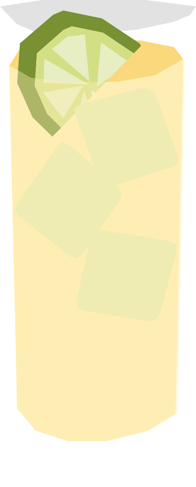

¿Cómo se dice bisonte en polaco?
Cóctel relativamente reciente, creado por estudiantes universitarios polacos en los años 90 como alternativa económica y fácil de preparar. Su nombre significa "bisonte" en lakota, en referencia a la Żubrówka (vodka de hierba de bisonte) que originalmente se usaba en la receta.
RECETA
- 50 ml Żubrówka (vodka de hierba de bisonte)
- 150 ml jugo de manzana
- Hielo en cubos
- Rodaja de limón
- Llena un vaso con hielo.
- Agrega la Żubrówka y completa con jugo de manzana.
- Mezcla suavemente.
- Agrega una rodaja de limón para decorar.
Vaso: Vaso alto / highball